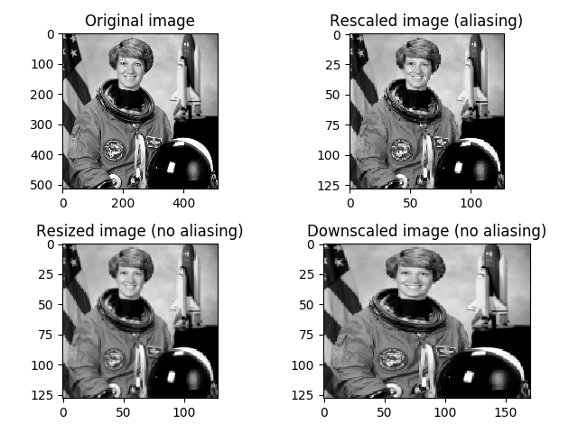

Source
SourceNote
Click here to download the full example code
Rescale, resize, and downscale¶
Rescale operation resizes an image by a given scaling factor. The scaling factor can either be a single floating point value, or multiple values - one along each axis.
Resize serves the same purpose, but allows to specify an output image shape instead of a scaling factor.
Note that when down-sampling an image, resize and rescale should perform Gaussian smoothing to avoid aliasing artifacts. See the anti_aliasing and anti_aliasing_sigma arguments to these functions.
Downscale serves the purpose of down-sampling an n-dimensional image by integer factors using the local mean on the elements of each block of the size factors given as a parameter to the function.
import matplotlib.pyplot as plt
from skimage import data, color
from skimage.transform import rescale, resize, downscale_local_mean
image = color.rgb2gray(data.astronaut())
image_rescaled = rescale(image, 0.25, anti_aliasing=False)
image_resized = resize(image, (image.shape[0] // 4, image.shape[1] // 4),
anti_aliasing=True)
image_downscaled = downscale_local_mean(image, (4, 3))
fig, axes = plt.subplots(nrows=2, ncols=2)
ax = axes.ravel()
ax[0].imshow(image, cmap='gray')
ax[0].set_title("Original image")
ax[1].imshow(image_rescaled, cmap='gray')
ax[1].set_title("Rescaled image (aliasing)")
ax[2].imshow(image_resized, cmap='gray')
ax[2].set_title("Resized image (no aliasing)")
ax[3].imshow(image_downscaled, cmap='gray')
ax[3].set_title("Downscaled image (no aliasing)")
ax[0].set_xlim(0, 512)
ax[0].set_ylim(512, 0)
plt.tight_layout()
plt.show()
Total running time of the script: ( 0 minutes 0.342 seconds)